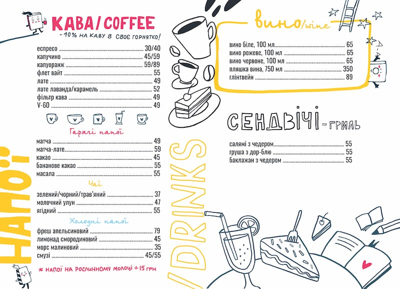

У нашому закладі ви зможете насолодитися різними видами кави, чаїв та десертів. Ми з гордістю пропонуємо вам великий вибір кавових напоїв, від класичних еспресо і капучино до більш екзотичних варіантів, які обов'язково здивують вас новими смаками. Також ми маємо широкий асортимент чаїв для тих, хто віддає перевагу м'якшим і заспокійливим напоям. І не забувайте про наші смачні десерти, які ідеально поєднуються з будь-яким напоєм — від ніжних тістечок до шоколадних ласощів, що зроблять ваш відпочинок ще солодшим.
Спробуйте нашу фірмову каву та домашні тістечка! Ми особливо пишаємося нашою фірмовою кавою, яку готують наші бариста з найкращих зерен, що гарантує чудовий смак та аромат у кожній чашці. Наша кава має унікальний смаковий профіль, який ви не знайдете в інших закладах. А якщо хочете чогось особливого — не забудьте спробувати наші домашні тістечка, випечені з любов’ю і увагою до кожної деталі. Вони стануть чудовим доповненням до вашого кавового чи чайного ритуалу.
